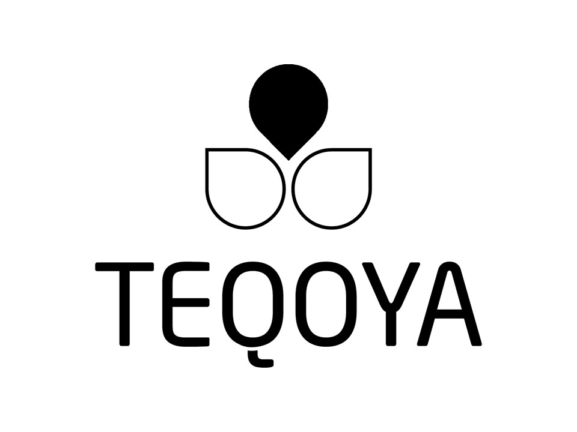
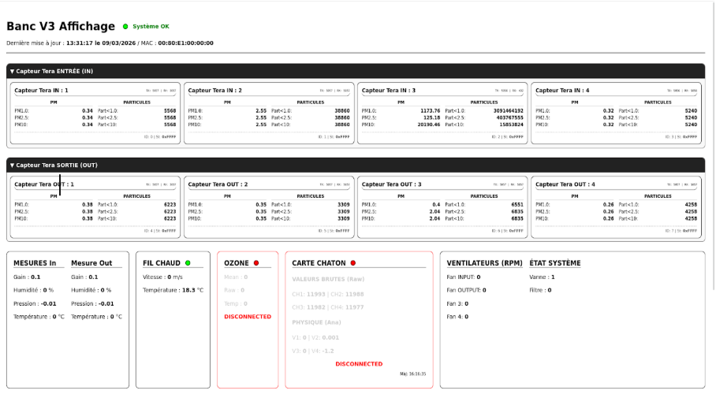
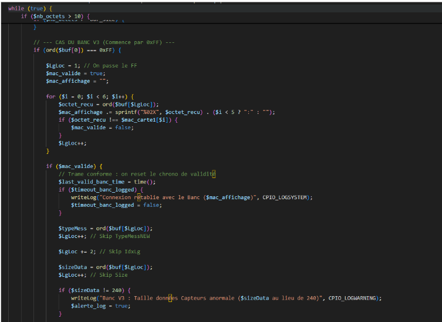
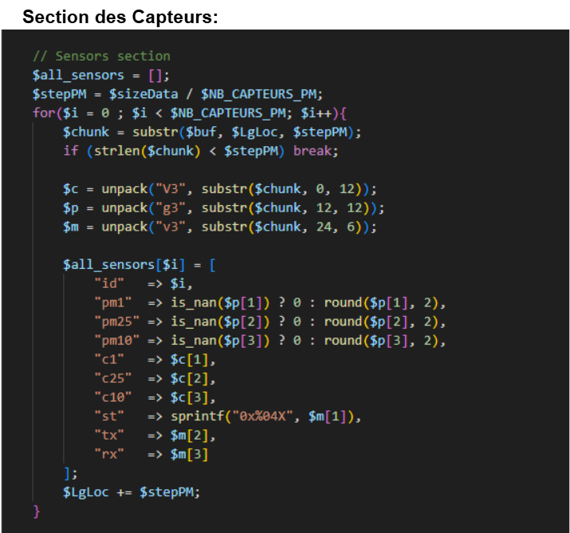
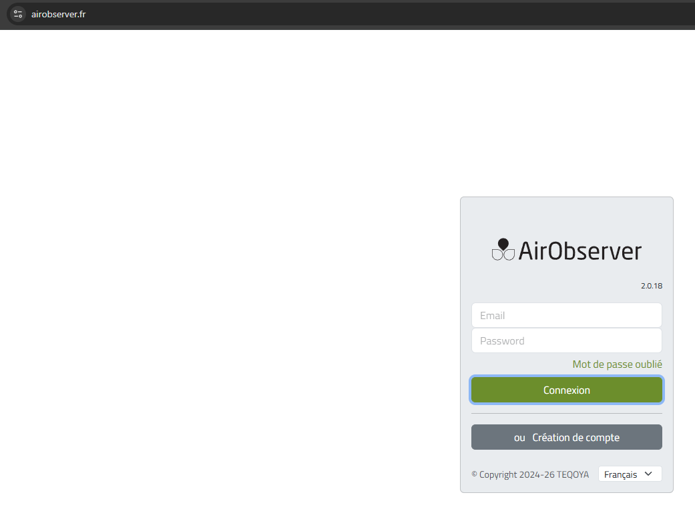
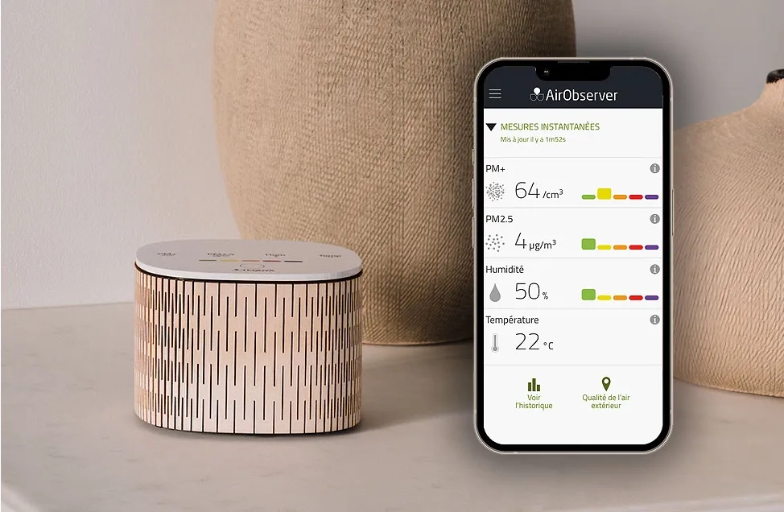
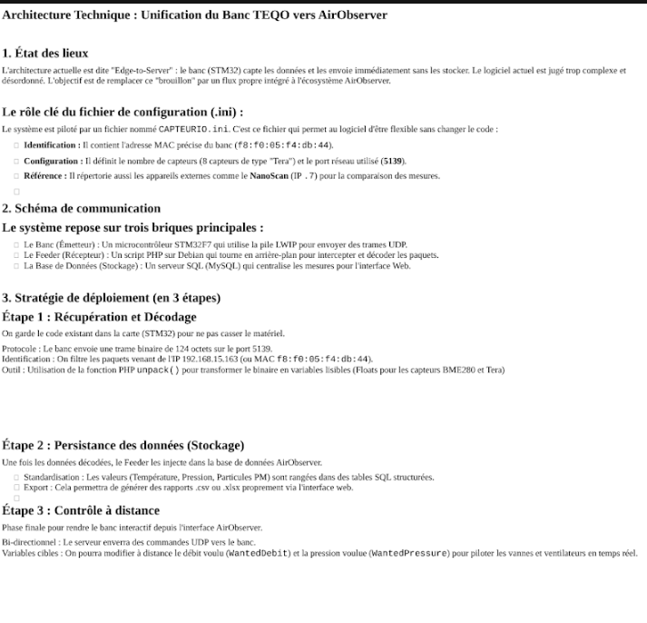
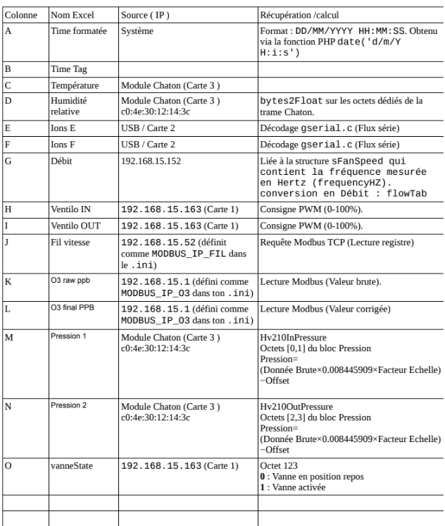

Stage de 2ème Année - TEQOYA (Villandraut)

Contexte et Objectifs du Stage
L'entreprise TEQOYA conçoit et fabrique des purificateurs d'air écoresponsables. L'objectif principal de mon stage de fin d'études était d'optimiser, restructurer et professionnaliser leur logiciel de banc de test matériel, alors à l'état de version "brouillon". J'ai dû lier le monde du développement web et de l'électronique embarquée pour créer une solution fiable de suivi des performances physiques des ioniseurs.
Analyse réflexive des compétences mobilisées
Clique sur une compétence pour déplier l'analyse et afficher la preuve technique associée.
Répondre aux incidents et aux demandes d'assistance et d'évolution
Application concrète :
Durant la réalisation de l'application web TeqoBench, j'ai pris en charge plusieurs demandes d'assistance et d'évolution applicative formulées par les utilisateurs. J'ai nettoyé l'interface graphique pour la rendre claire et intuitive pour les équipes de production.
Sur le plan technique, j'ai ajouté plusieurs scripts dans un collect.php . Afin de récupérer les données de plusieurs capteurs situés sur les bancs d'essais.

Interface de visualisation des données
récuperation des données (Trames)
Décodage des données reçues des capteursDévelopper la présence en ligne de l’organisation
Application concrète :
Pour mettre fin à l'éparpillage des résultats de tests, j'ai développé un site internet local en PHP destiné aux techniciens de TEQOYA. Ce site est directement interfacé avec une base de données relationnelle SQL que j'ai structurée pour centraliser et archiver proprement les métriques collectées.
Cette refonte applicative a permis de remplacer l'ancien système lent par une plateforme fluide, capable d'afficher en temps réel l'ensemble des résultats des bancs d'essais sans aucune latence d'exécution, fiabilisant ainsi le contrôle qualité des purificateurs avant leur commercialisation.

Aperçu du site de connexion à son espace personnel
Aperçu de l'interface mobile pour voir les données de son capteurTravailler en mode projet
Application concrète :
Afin de garantir la bonne méthode pour développer le nouveau soft pour TEQOYA, j'ai rédigé une documentation technique et détaillé permettant ainsi aux prochains développeurs de comprendre, maintenir et faire évoluer le système facilement sans blocage.
Dans cette documentation, j'ai notamment modélisé l'architecture technique globale du projet, explicitant le flux des données depuis les capteurs physiques jusqu'à l'interface utilisateur web locale en PHP.
J'ai également documenté avec précision le format des trames et le protocole de décodage des données reçues des capteurs du banc de test (température, humidité, poussière).

Modélisation de l'architecture technique globale du banc d'essai
Documentation technique du protocole de communication et du décodage des trames des capteurs